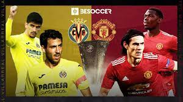

Javi Mata: El gran partido esta aqui, uno de los partidos mas importante de nuestra historia se acerca, estamos a tan solo 1 hora.
Javi Mata: El partido va a comenzar, pero primero, la cancion que todos queriamos, ahi va, el imno de la CHAMPIONS LEAGUE
EMPIECA EL PARTIDO!!